A quieter workbench — all 18 screens.
These are vector design proposals, not actual app captures. Click any screen to inspect its SVG at full size.
Open the complete multi-screen SVG · Before / after evidence · Full review
01 Thread · Moonstone
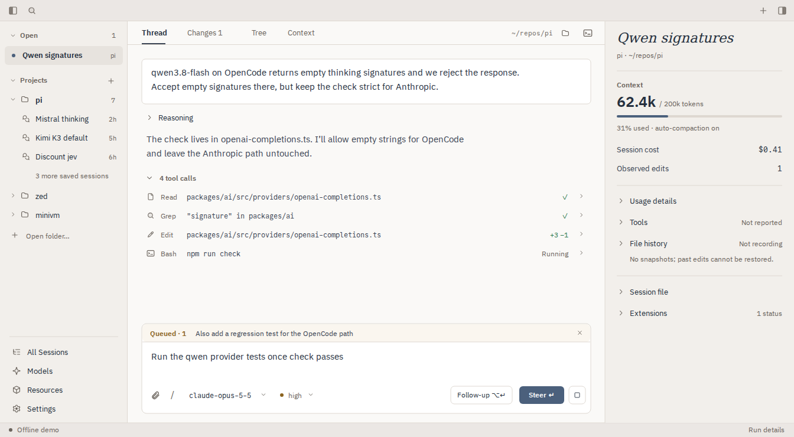
Readable text, one open-session entry, a quieter contextual inspector. SVG · PNG
02 Thread · Evening
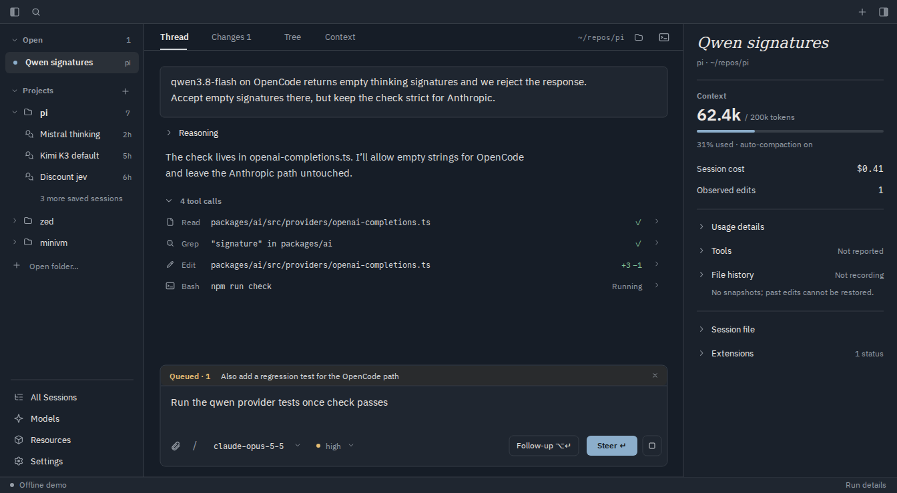
Neutral selection and stronger secondary text; keep the ink-blue surfaces. SVG · PNG
03 Thread · wide window
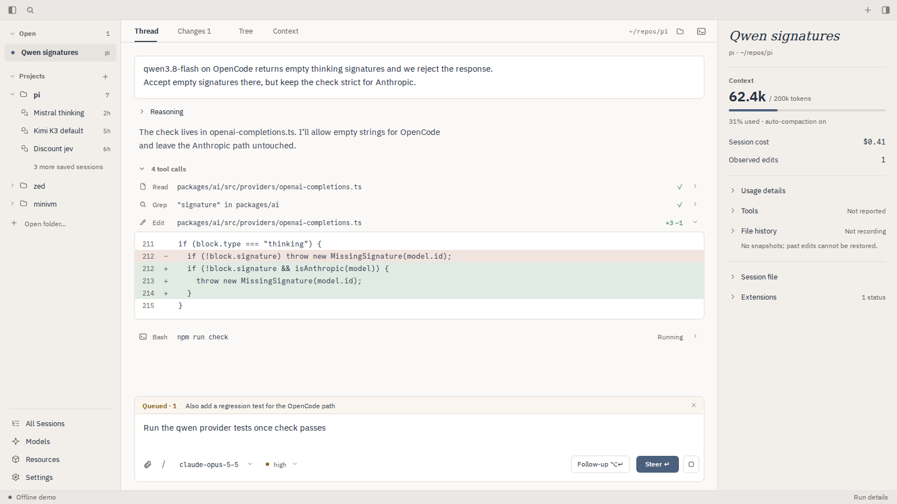
1600 × 900. Fluid tools/composer, readable prose. Edit explicitly expanded, not opened by resizing. SVG · PNG
04 Start a conversation
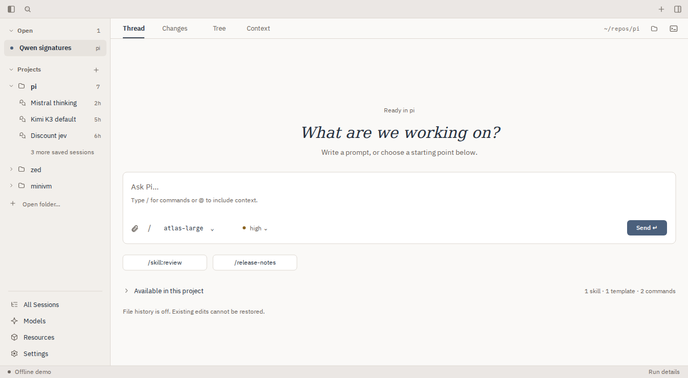
The same fluid composer and 24px gutters. Lead with the prompt, not project metadata. SVG · PNG
05 Global search · results
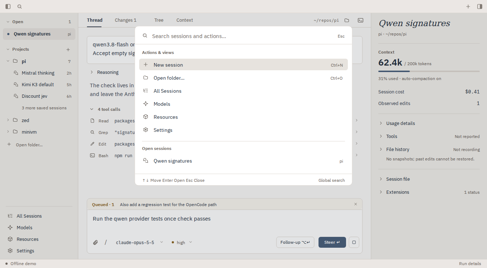
A distinct global query, keyboard selection and clear scope. SVG · PNG
06 Global search · no matches
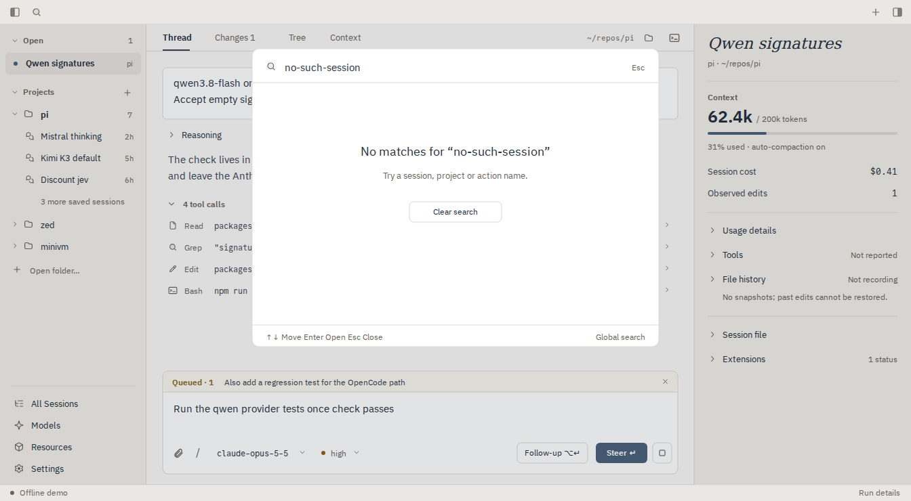
An explicit empty state; background navigation is not filtered away. SVG · PNG
07 New Session · project folder
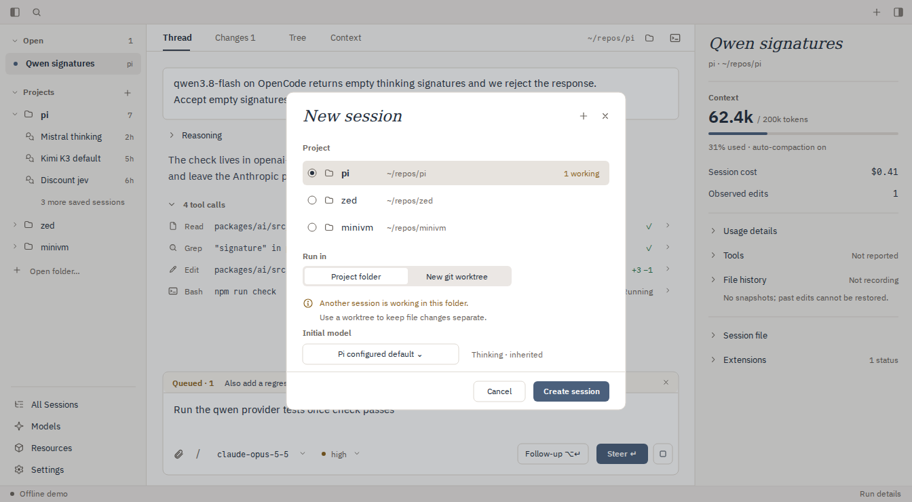
Keep the compact 500px form; clarify inherited settings and active-folder overlap. SVG · PNG
08 New Session · worktree
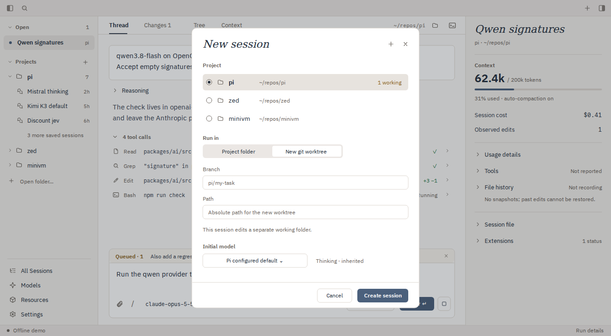
Conditional branch/path fields, no unusable option, one fixed action footer. SVG · PNG
09 All Sessions
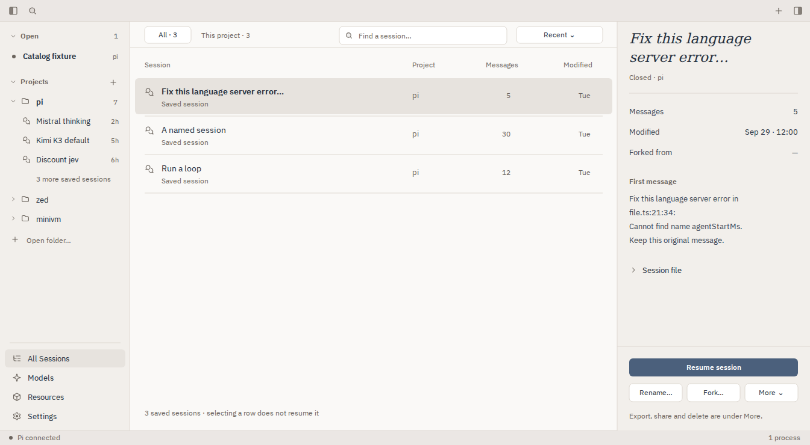
One primary action. Put infrequent export/share/delete operations under More. SVG · PNG
10 Models · selected model
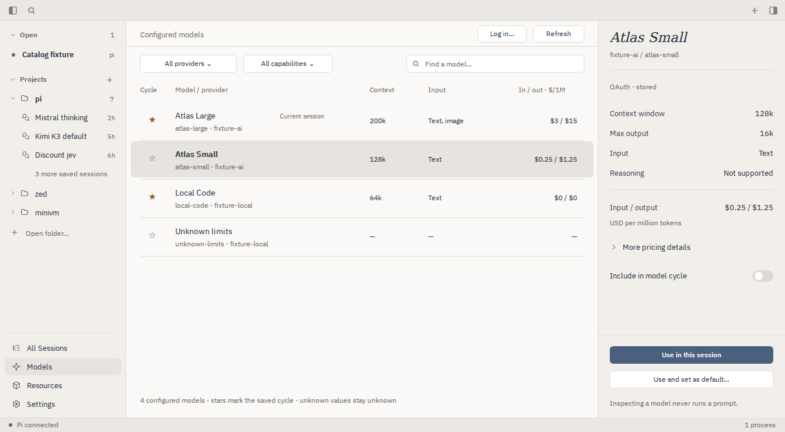
Compact provider filters, legible rows, explicit current/selected/cycle states. SVG · PNG
11 Models · compact details drawer
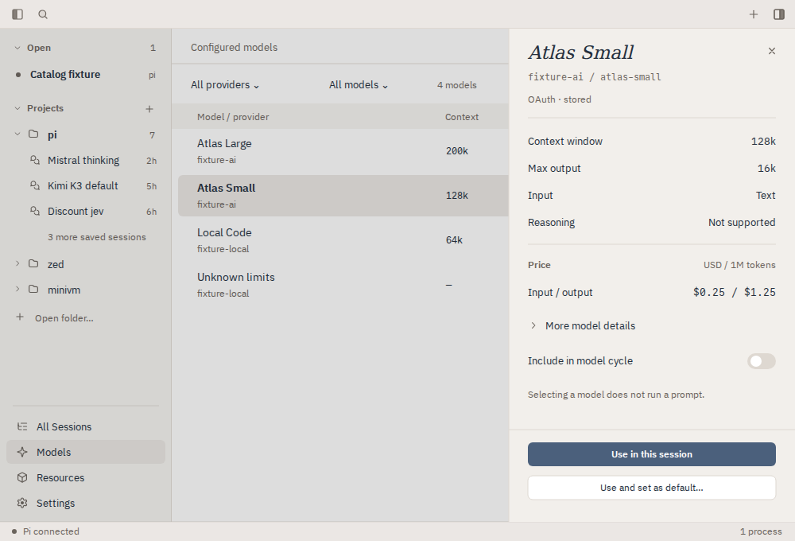
1000 × 680. Requested details overlay; actions do not disappear or squeeze the table. SVG · PNG
12 Resources · user packages
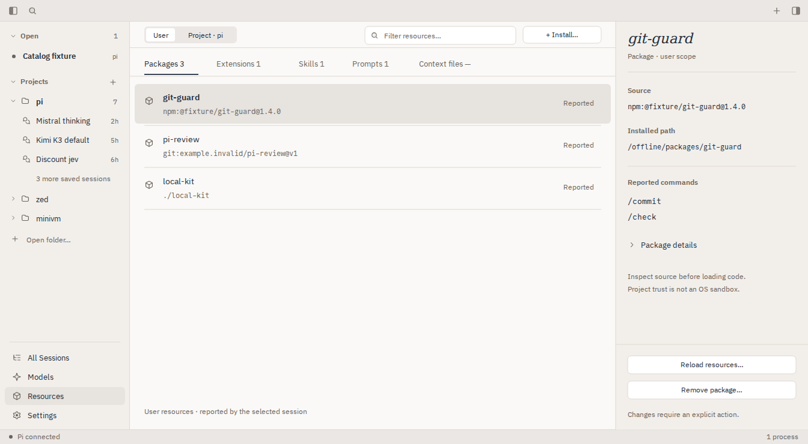
Consistent scope, tabs and resource title; one place for intentional package actions. SVG · PNG
13 Resources · project trust
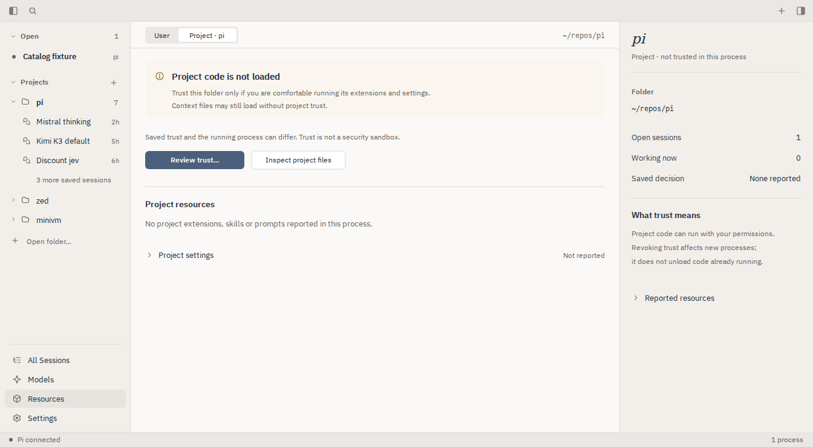
One trust entry point with consequences visible; trust is not a sandbox. SVG · PNG
14 Settings · model & thinking
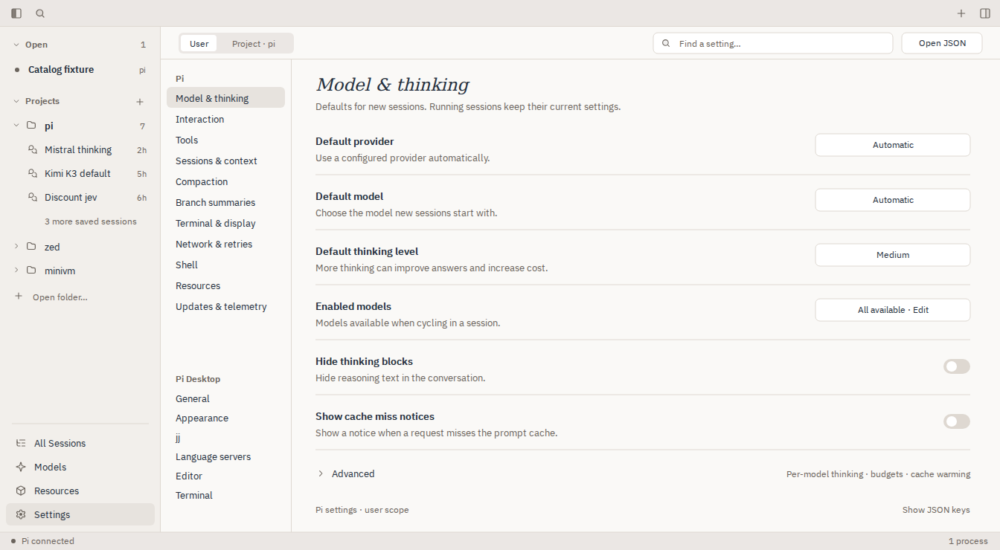
Inline explanations. JSON keys and advanced settings remain available on demand. SVG · PNG
15 Settings · appearance
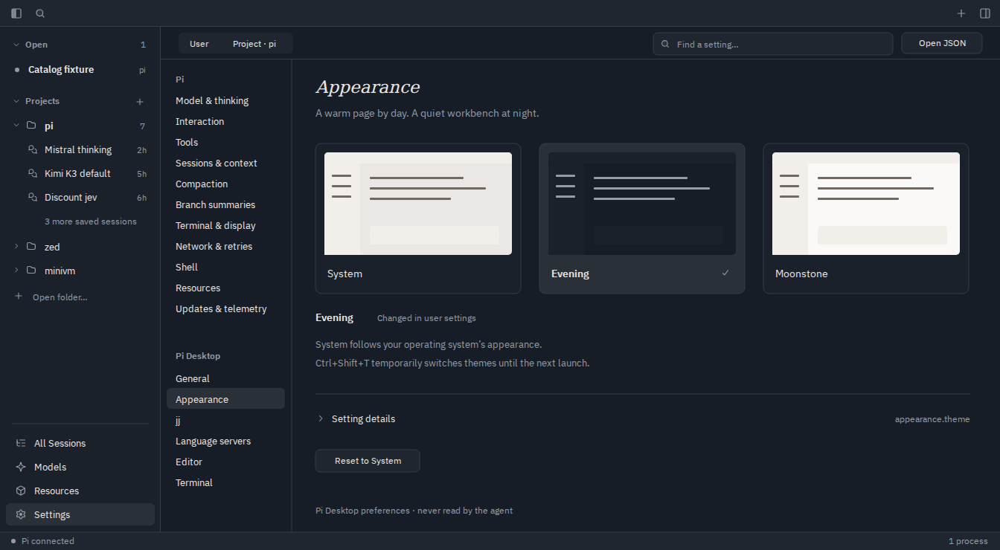
Theme previews convey a real choice; do not add a dashboard of new settings. SVG · PNG
16 Changes · observed diff
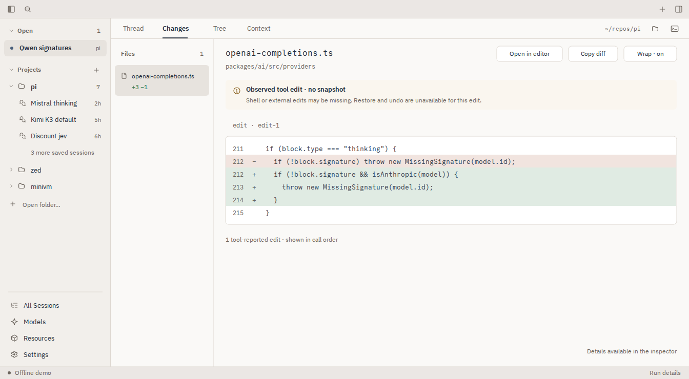
A 200px file rail, wider diff and one action row. Missing snapshots remain explicit. SVG · PNG
17 Tree · selected branch entry
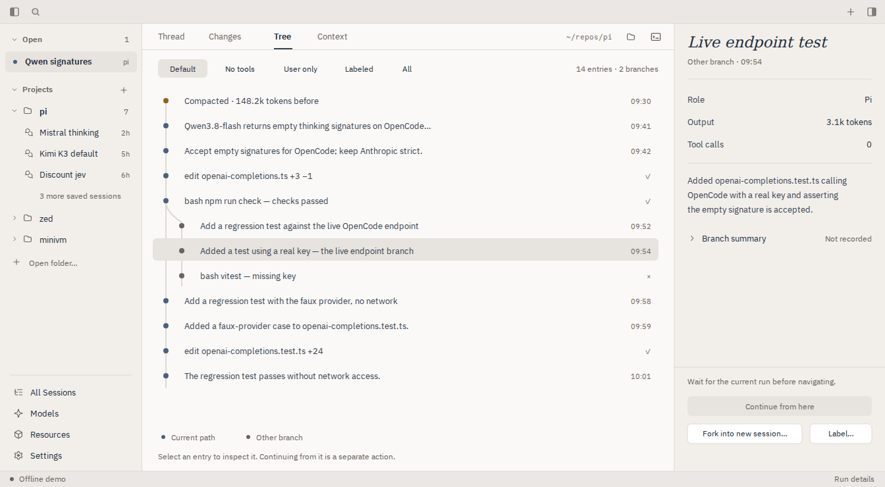
Keep the distinctive branch geometry; separate inspection from navigation. SVG · PNG
18 Context · usage & compaction
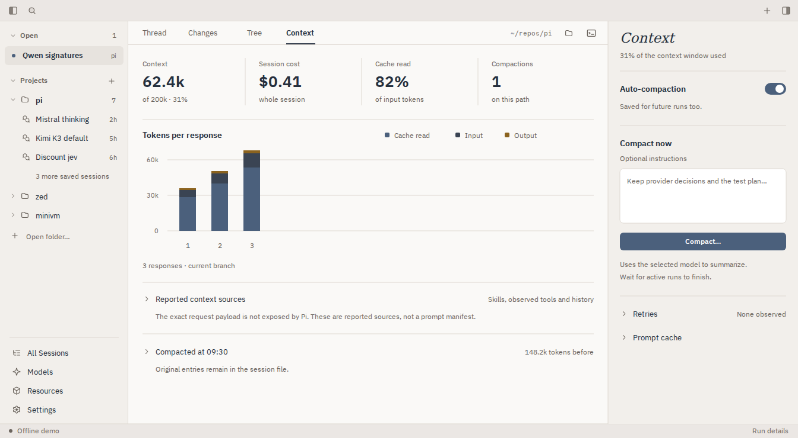
Sparse bars have a sensible width. A real switch replaces an action-looking toggle. SVG · PNG